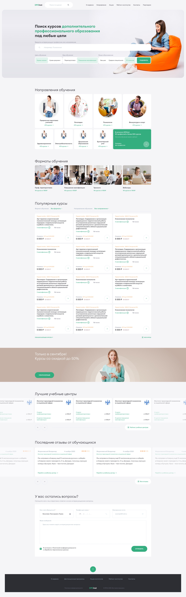
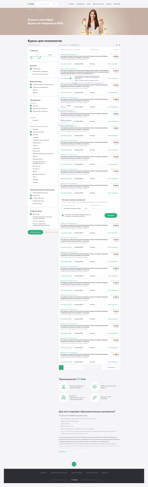
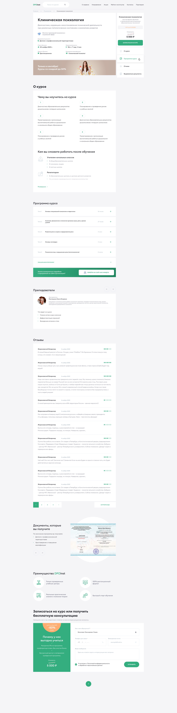
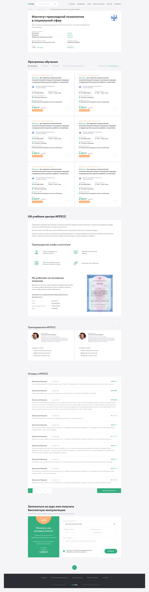
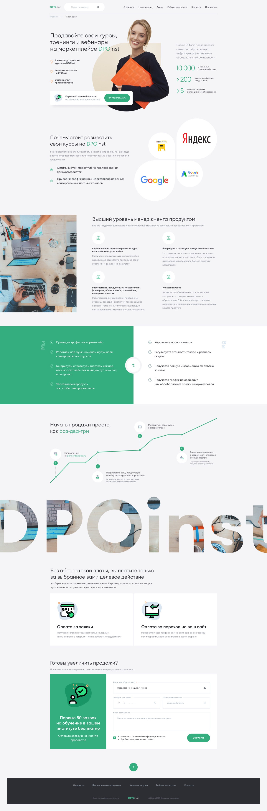
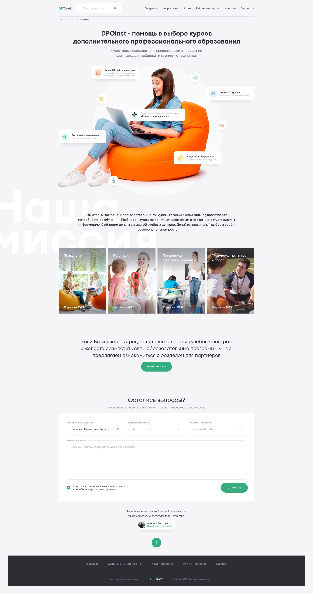
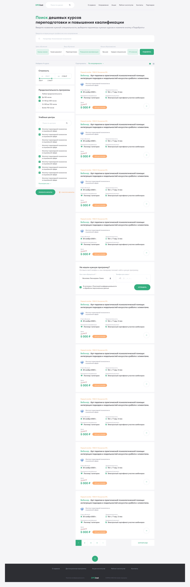
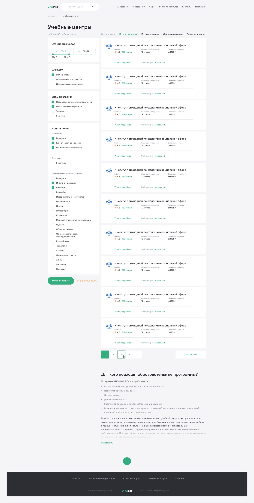
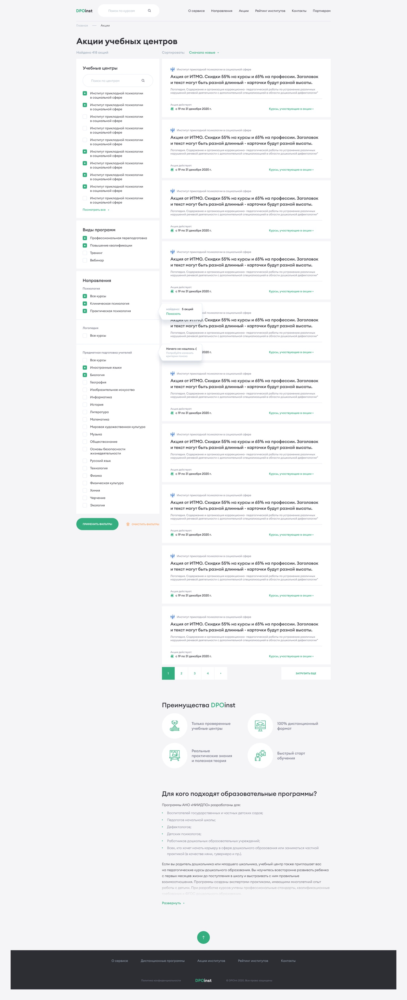
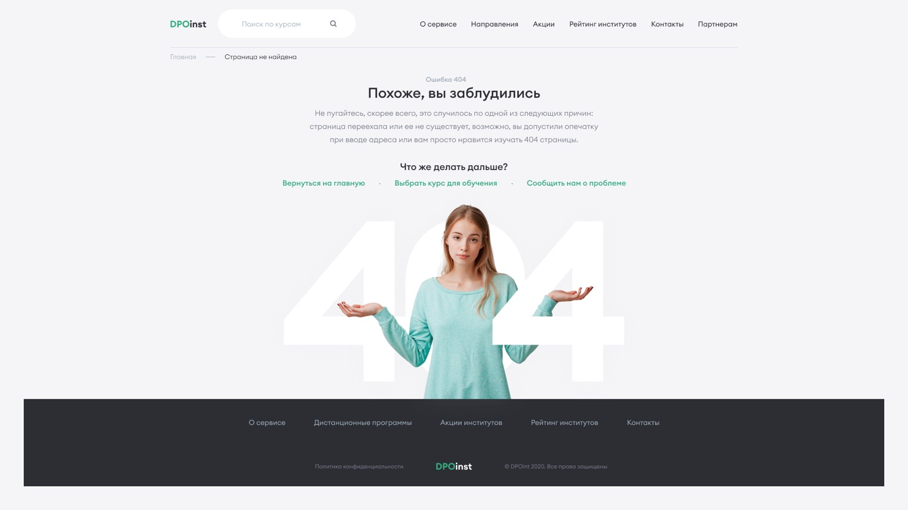

DPOinst
Маркетплейс курсов дополнительного профессионального образования: переподготовка, повышение квалификации, тренинги и вебинары от проверенных учебных центров. Продукт с нуля — от структуры до 75 макетов в трёх разрешениях и UI-кита.






Задача:
Рынок дополнительного образования огромный и раздробленный: сотни учебных центров, у каждого свой сайт, свои цены и своя логика. Человеку, которому нужна переподготовка или удостоверение о повышении квалификации, приходится сравнивать программы вручную. Нужно было собрать их в одном месте и сделать выбор курса таким же простым, как выбор товара на маркетплейсе.
Что было сложного:
- Две аудитории с разными целями: слушателю нужен подходящий курс, учебному центру — заявки и продажи;
- Сложный продукт: у курса десяток параметров — формат, длительность, квалификация, документ, рассрочка — и все важны для решения;
- Доверие: покупают дорогую и долгую услугу у незнакомой организации, поэтому лицензии, преподаватели и отзывы должны быть на виду;
- Три разрешения: большая часть трафика — мобильная, и фильтры с десятками пунктов должны работать на экране 320 px.
Роль:
Дизайнер. Структура сервиса, пользовательские сценарии, визуальный стиль, все макеты для десктопа, планшета и мобильных, UI-кит и сопровождение разработки.
Этап #1
Главная: поиск курса с первого экрана
Главная работает на две задачи: дать быстрый вход тем, кто знает, что ищет, и подсказать остальным. Поэтому на первом экране — поисковая строка и три быстрых фильтра: цель обучения, вид программы и уровень образования. А ниже страница ведёт от общего к частному:
- направления обучения с количеством курсов в каждом;
- форматы: переподготовка, повышение квалификации, тренинги, вебинары;
- популярные курсы с переключением по формату и направлению;
- рейтинг учебных центров и свежие отзывы.
- В строке поиска сменяются востребованные специальности — подсказка, что искать, без лишнего текста.
- Счётчики курсов и центров подтягиваются из CRM: цифры на сайте всегда реальные.
Этап #2
Каталог: сравнить десятки программ за минуту
Главное в каталоге — карточка курса. Я собрал в неё всё, по чему люди сравнивают программы, и выстроил иерархию так, чтобы взгляд шёл по порядку принятия решения:
- формат и название — что это за программа;
- учебный центр — кто её ведёт;
- старт, длительность, квалификация и документ — что я получу;
- цена, скидка и рассрочка — сколько это стоит.
Для быстрого сравнения есть второй вид — компактный список, где параметры выстроены в колонки, как в таблице.
- На десктопе фильтры применяются на лету, без перезагрузки, а рядом всплывает подсказка с числом найденных курсов.
- Карточка выдерживает длинные названия программ — а в ДПО они бывают на три строки.
- Форма «Не нашли нужную программу?» встроена прямо в выдачу и ловит тех, кто уже готов уйти.

Фильтры пришлось переосмыслить, когда учебных центров стало много. В свёрнутом виде показываются семь самых популярных, а в развёрнутом появляются поиск, алфавитный указатель и прокрутка внутри блока. На планшете и мобильных кнопки «Применить» и «Очистить» закреплены внизу и не прячутся под панелью браузера.
- Один набор фильтров для каталога, поиска, учебных центров и акций.
Этап #3
Страница курса: всё для решения и кнопка записи всегда рядом
Курс ДПО покупают на месяцы, поэтому человек хочет знать всё заранее. Страница отвечает на вопросы в том порядке, в каком они возникают:
- чему научусь и кем смогу работать после обучения;
- программа по модулям и темам с количеством часов — раскрывается по клику;
- кто преподаёт и что говорят выпускники;
- какой документ я получу — с образцом диплома или удостоверения.
- Блок с ценой и кнопкой «Записаться» закреплён справа при прокрутке, там же навигация по разделам страницы.
- Внизу — форма записи с аргументами, почему выгодно учиться через сервис.
- Для центров с подробным описанием на своём сайте — переход к нему прямо из программы.
Этап #4
Учебные центры и акции: доверие через прозрачность

Многие выбирают сначала организацию, а потом курс. Для них есть рейтинг учебных центров: оценка, число отзывов, количество программ и минимальная стоимость — сравнить можно не открывая ни одной страницы.
На странице центра собрано то, что снимает сомнения: описание, преимущества, данные лицензии с её сканом, преподаватели и отзывы. Программы центра можно отфильтровать по формату, не уходя со страницы.
- Лицензия с ОГРН и номером бланка на виду: проверить центр в Рособрнадзоре можно за минуту.
- Короткие названия центров для заголовков и кнопок — предусмотрены в админке.
Акции вынесены в отдельный раздел: скидка — сильный аргумент для тех, кто давно откладывает обучение. Карточки разной высоты, потому что условия у центров разные, а из каждой акции можно сразу перейти к курсам, которые в ней участвуют.
- Срок действия акции и список курсов в каждой карточке.

Этап #5
Вторая сторона маркетплейса: страница для учебных центров
Маркетплейс живёт, пока на нём есть предложения. Страница «Партнёрам» продаёт сервис учебным центрам и отвечает на их главные вопросы:
- в чём выгода — трафик из поисковиков и платных каналов;
- что берёт на себя сервис, а что остаётся за центром — наглядно, в двух колонках;
- как начать — три шага на графике роста;
- сколько стоит — без абонентской платы, только за заявку или переход на сайт.
- Первые 50 заявок бесплатно — оффер вынесен и на первый экран, и в форму.
- Показатели сервиса в цифрах: посетители в день, заявки, годы на рынке.
«О сервисе» объясняет, зачем нужен DPOinst, и мягко разводит аудитории: слушателей — к направлениям обучения, учебные центры — к разделу для партнёров. Служебные страницы — 404, ошибка сервера, заглушка, успешная и неуспешная отправка формы — сделаны в том же характере и всегда предлагают, куда идти дальше.
- Онлайн-индикатор у контакта поддержки, чтобы писали смелее.
- У 404 три понятных выхода: на главную, к курсам, в поддержку.

Итог
DPOinst закрывает обе стороны маркетплейса: слушатель находит и сравнивает курсы разных учебных центров в одном интерфейсе, а учебный центр получает понятный канал продаж с оплатой за результат. Все экраны собраны из общего UI-кита, адаптированы под планшет и мобильные и снабжены комментариями для разработки — как ведут себя фильтры, что закреплено при прокрутке, откуда берутся данные.
- 75 макетов: десктоп, планшет и мобильные.
- UI-кит, на котором сервис развивается дальше: новые фильтры и страницы собираются из готовых блоков.